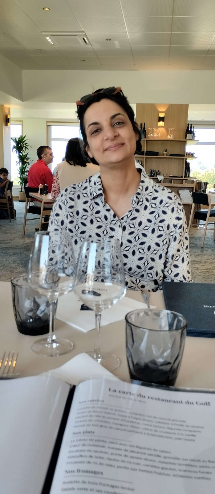

Bienvenue à toi Mymy, tu viens de découvrir la deuxième partie de cette lettre. Peut-être pensais tu que ce serait la fin, mais en fait tu n'es qu'au début de ton aventure.
Cette lettre comporte plusieurs parties, je pourrai te dire exactement combien mais je ne le ferai pas ( Indice : moins de 10 ). Les lire toutes te demandera de l'énergie et du temps et je sais que
tu n'en a pas beaucoup avec ton métier, mais s'il te plait prend le temps de le faire, il n'y a aucune limite de temps, pas de bombe qui explose si un timer arrive à zero, et si vraiment tu bloques
tu peux m'appeler pour que je te vienne en aide.
Voici donc la suite de la lettre... en Allemand par contre pour voir tes progrès à Duolingo.

...
Während dieser dreieinhalb Stunden habe ich in dir nach Rissen gesucht, nach Spuren, die mir eine andere Mymy gezeigt hätten als die, die ich in- und auswendig kenne.
Aber ich habe nichts gefunden – außer einer gewissen Melancholie, als ob du ein wenig im Unklaren, im Zweifel wärst. Mehrmals hast du mir gesagt, wie schön du unsere
Insel findest… wie konntest du ihre Schönheit vergessen? Abgesehen davon habe ich im Blick denselben Glanz wiedergefunden, dieselbe Anmut – und du warst so schön,
mit deinen Augenringen, deinem mousselineartigen Bauch und diesem Bubikopf, der dir so gut steht.
An jenem Tag bin ich mit einem etwas beruhigten Geist zurückgekehrt, aber mit einem seltsam zweifelnden Herzen. Denn warum schließlich hatten wir diesen Nachmittag wie „früher“
verbracht? Mit diesen unerschöpflichen Gesprächen, die mir so viel Sanftheit schenken? Da ließ ich in mir den Gedanken keimen, dass du mich noch immer liebst, ohne es mir sagen zu können.
Also habe ich dir erneut geschrieben, und wir haben uns wiedergetroffen – am Donnerstag, dann am Freitag...
Pour accéder à la troisième partie de la lettre, trouve le mot de passe :
Je donnerai un rein pour voir ta tête en ce moment :)
la première partie du mot de passe est le nom de famille (juste le nom pas son prénom) d'un personnage fictif célèbre
créé en 1905 et associé à un endroit que l'on a visité toi et moi en aout 2024. Ce jour là on a pris la photo que tu peux voir en haut de cette page web.
La deuxième partie du mot de passe est un nombre entier égal à la fois à la somme de ton mois et de ton jour de naissance mais aussi au produit de mon mois
et de mon jour de naissance. Dans un certain sens on pourrait (presque) dire que tu es mon logarithme Néperien et moi ton exponentielle, mais il me faudrait plus qu'une simple lettre pour t'expliquer pourquoi.